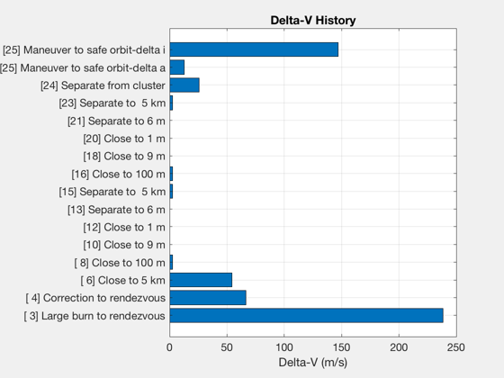

Generate the Spacecraft Fuel Budget.
Uses data from DefaultSpacecraftDataFile. Loads the TwoArraySC.mat model. ------------------------------------------------------------------------- See also DVHoh, FBudget, BDDesign, MolWt2R -------------------------------------------------------------------------
Contents
%-------------------------------------------------------------------------- % Copyright (c) 2001 Princeton Satellite Systems, Inc. % All rights reserved. %--------------------------------------------------------------------------
clear variables used in this demo
%----------------------------------- clear f x event d
Specify spacecraft variant
%---------------------------- g = load('TwoArraySC'); inr = g.mass.inertia; cM = g.mass.cM; mTotal = g.mass.mass;
Load thruster parameters
%-------------------------- d = load('DefaultSpacecraftDataFile'); d = d.thruster; tNom = d.temperatureTank; pInit = d.pressure; pFinal = 100*6895; % Pa rhoF = d.densityFuel; temp = d.temperatureTank; massF = d.massFuel; u = d.u; r = d.r; for k = 1:8 f(k).iSP = [100 110 10]; f(k).thrust = d.thrustCoefficient(1); f(k).riseTime = 0.016; f(k).fallTime = 0.016; f(k).u = u(:,k); f(k).r = r(:,k); f(k).systemID = 1; f(k).type = 'liquid'; end for k = 9:12 f(k).iSP = [100 120 10]; f(k).thrust = d.thrustCoefficient(9); f(k).riseTime = 0.016; f(k).fallTime = 0.016; f(k).u = u(:,k); f(k).r = r(:,k); f(k).systemID = 1; f(k).type = 'liquid'; end [v, mP] = BDDesign( massF, rhoF, tNom, pInit, pFinal );
Spacecraft data
%------------------ x.regulatedPressure = pInit; x.systemType = ['liquid']; x.systemTemp = temp; x.systemVol = v; x.systemFuel = massF; x.thrust = 0; x.pressurantMass = mP; x.pressurantR = MolWt2R( 0.004 ); x.dryMass = mTotal-massF; x.fuelDensity = rhoF; x.thrusterData = f; x.controlDT = 1;
Compute the delta-v for a coplanar Hohmann transfer
This is a function included in the Orbit Module. A portion of the function is provided below to run this demo. r1 is initial orbit radius, r2 is target orbit radius, result is Delta-v --------------------------------------------------------------------
if( ~exist('DVHoh','file') ) mu = 3.98600436e5; DVHoh = @(r1, r2) sqrt(2*mu/r1 - mu/((r1+r2)/2)) - sqrt(mu/r1) + sqrt(mu/r2) - sqrt(2*mu/r2 - mu/((r1+r2)/2)); end
Events and whether thrusters are used
------------------------------------- 1 Shuttle separation using SHELS No 2 Orbit the shuttle at 500 m for 30 minutes Yes 3 Perform initial burn for TechSat-21 rendezvous Yes 4 Perform course correction for TechSat-21 rendezvous Yes 5 Radar acquisition of the TechSat-21 cluster at 100 km No 6 Maneuver to stable position wrt cluster 5 km behind cluster cm Yes 7 Establish ISL No 8 Maneuver to within 100 m of TechSat-21 spacecraft Yes 9 Orbit TechSat-21 at 100 m for 1 hour Yes 10 Close to 9 m Yes 11 Orbit at 9 m testing vision system Yes 12 Close to 1 m Yes 13 Separate to 6 m Yes 14 Orbit at 6 m for 30 minutes Yes 15 Separate to stable position 1 km from cm of cluster Yes 16-23 Repeat 8-15 with a second spaceccraft Yes 24 Separate from the cluster Yes 25 Put spacecraft into a safe orbit Yes
k = 1; event(k).type = 'initial'; event(k).description = '[ 1] Initial State'; event(k).aCSThruster = []; event(k).dVThruster = []; event(k).dVTotal = []; event(k).dHTotal = []; event(k).disturbance = []; event(k).pulsewidthACS = 0; event(k).pulsewidthDV = 0; event(k).nPulses = []; event(k).duration = []; event(k).regulated = 0; event(k).cM = [0;0;0]; k = k + 1; event(k).type = 'circular'; event(k).description = '[ 2] Orbit Shuttle'; event(k).aCSThruster = 1:8; event(k).dVThruster = [9 10 11 12]; event(k).circular.period = 60; event(k).circular.radius = 500; event(k).circular.duration = 120; event(k).circular.jT = [5 7]; event(k).dVTotal = []; event(k).dHTotal = []; event(k).dTControl = 1; event(k).disturbance = []; event(k).nPulses = []; event(k).duration = []; event(k).regulated = 0; event(k).cM = [0;0;0]; k = k + 1; event(k).type = 'delta-v'; event(k).description = '[ 3] Large burn to rendezvous'; event(k).aCSThruster = 1:8; event(k).dVThruster = 9:12; event(k).dVTotal = abs(DVHoh( 6578, 7000 ))*1000; % 200 km shuttle orbit event(k).dHTotal = []; event(k).dTControl = 1; event(k).disturbance = []; event(k).nPulses = []; event(k).duration = []; event(k).regulated = 0; event(k).cM = [0;0;0]; k = k + 1; event(k).type = 'delta-v'; event(k).description = '[ 4] Correction to rendezvous'; event(k).aCSThruster = 1:8; event(k).dVThruster = 9:12; event(k).dVTotal = abs(DVHoh( 6878, 7000 ))*1000; % Equivalent to small burn event(k).dHTotal = []; event(k).dTControl = 1; event(k).disturbance = []; event(k).nPulses = []; event(k).duration = []; event(k).regulated = 0; event(k).cM = [0;0;0]; k = k + 1; event(k).type = 'delta-v'; event(k).description = '[ 6] Close to 5 km'; event(k).aCSThruster = 1:8; event(k).dVThruster = 9:12; event(k).dVTotal = abs(DVHoh( 6900, 7000 ))*1000; % Equivalent to small burn event(k).dHTotal = []; event(k).dTControl = 1; event(k).disturbance = []; event(k).nPulses = []; event(k).duration = []; event(k).regulated = 0; event(k).cM = [0;0;0]; k = k + 1; event(k).type = 'delta-v'; event(k).description = '[ 8] Close to 100 m'; event(k).aCSThruster = 1:8; event(k).dVThruster = 9:12; event(k).dVTotal = abs(DVHoh( 6995, 7000 ))*1000; % Equivalent to small burn event(k).dHTotal = []; event(k).dTControl = 1; event(k).disturbance = []; event(k).nPulses = []; event(k).duration = []; event(k).regulated = 0; event(k).cM = [0;0;0]; k = k + 1; event(k).type = 'circular'; event(k).description = '[ 9] Orbit TechSat-21 at 100 m'; event(k).aCSThruster = 1:8; event(k).dVThruster = [9 10 11 12]; event(k).circular.period = 10; event(k).circular.radius = 100; event(k).circular.duration = 60; event(k).circular.jT = [5 7]; event(k).dVTotal = []; event(k).dHTotal = []; event(k).dTControl = 1; event(k).disturbance = []; event(k).nPulses = []; event(k).duration = []; event(k).regulated = 0; event(k).cM = [0;0;0]; k = k + 1; event(k).type = 'delta-v'; event(k).description = '[10] Close to 9 m'; event(k).aCSThruster = 1:8; event(k).dVThruster = 9:12; event(k).dVTotal = abs(DVHoh( 6999.9, 7000 ))*1000; % Equivalent to small burn event(k).dHTotal = []; event(k).dTControl = 1; event(k).disturbance = []; event(k).nPulses = []; event(k).duration = []; event(k).regulated = 0; event(k).cM = [0;0;0]; k = k + 1; event(k).type = 'circular'; event(k).description = '[11] Orbit TechSat-21 at 9 m'; event(k).aCSThruster = 1:8; event(k).dVThruster = [9 10 11 12]; event(k).circular.period = 10; event(k).circular.radius = 9; event(k).circular.duration = 240; event(k).circular.jT = [5 7]; event(k).dVTotal = []; event(k).dHTotal = []; event(k).dTControl = 1; event(k).disturbance = []; event(k).nPulses = []; event(k).duration = []; event(k).regulated = 0; event(k).cM = [0;0;0]; k = k + 1; event(k).type = 'delta-v'; event(k).description = '[12] Close to 1 m'; event(k).aCSThruster = 1:8; event(k).dVThruster = 9:12; event(k).dVTotal = abs(DVHoh( 6999.991, 7000 ))*1000; % Equivalent to small burn event(k).dHTotal = []; event(k).dTControl = 1; event(k).disturbance = []; event(k).nPulses = []; event(k).duration = []; event(k).regulated = 0; event(k).cM = [0;0;0]; k = k + 1; event(k).type = 'delta-v'; event(k).description = '[13] Separate to 6 m'; event(k).aCSThruster = 1:8; event(k).dVThruster = 9:12; event(k).dVTotal = abs(DVHoh( 7000, 6999.994 ))*1000; % Equivalent to small burn event(k).dHTotal = []; event(k).dTControl = 1; event(k).disturbance = []; event(k).nPulses = []; event(k).duration = []; event(k).regulated = 0; event(k).cM = [0;0;0]; k = k + 1; event(k).type = 'circular'; event(k).description = '[14] Orbit TechSat-21 at 6 m'; event(k).aCSThruster = 1:8; event(k).dVThruster = [9 10 11 12]; event(k).circular.period = 10; event(k).circular.radius = 6; event(k).circular.duration = 240; event(k).circular.jT = [5 7]; event(k).dVTotal = []; event(k).dHTotal = []; event(k).dTControl = 1; event(k).disturbance = []; event(k).nPulses = []; event(k).duration = []; event(k).regulated = 0; event(k).cM = [0;0;0]; k = k + 1; event(k).type = 'delta-v'; event(k).description = '[15] Separate to 5 km'; event(k).aCSThruster = 1:8; event(k).dVThruster = 9:12; event(k).dVTotal = abs(DVHoh( 7000, 6995 ))*1000; % Equivalent to small burn event(k).dHTotal = []; event(k).dTControl = 1; event(k).disturbance = []; event(k).nPulses = []; event(k).duration = []; event(k).regulated = 0; event(k).cM = [0;0;0]; k = k + 1; event(k).type = 'delta-v'; event(k).description = '[16] Close to 100 m'; event(k).aCSThruster = 1:8; event(k).dVThruster = 9:12; event(k).dVTotal = abs(DVHoh( 6995, 7000 ))*1000; % Equivalent to small burn event(k).dHTotal = []; event(k).dTControl = 1; event(k).disturbance = []; event(k).nPulses = []; event(k).duration = []; event(k).regulated = 0; event(k).cM = [0;0;0]; k = k + 1; event(k).type = 'circular'; event(k).description = '[17] Orbit TechSat-21 at 100 m'; event(k).aCSThruster = 1:8; event(k).dVThruster = [9 10 11 12]; event(k).circular.period = 10; event(k).circular.radius = 100; event(k).circular.duration = 60; event(k).circular.jT = [5 7]; event(k).dVTotal = []; event(k).dHTotal = []; event(k).dTControl = 1; event(k).disturbance = []; event(k).nPulses = []; event(k).duration = []; event(k).regulated = 0; event(k).cM = [0;0;0]; k = k + 1; event(k).type = 'delta-v'; event(k).description = '[18] Close to 9 m'; event(k).aCSThruster = 1:8; event(k).dVThruster = 9:12; event(k).dVTotal = 0.0539; event(k).dHTotal = []; event(k).dTControl = 1; event(k).disturbance = []; event(k).nPulses = []; event(k).duration = []; event(k).regulated = 0; event(k).cM = [0;0;0]; k = k + 1; event(k).type = 'circular'; event(k).description = '[19] Orbit TechSat-21 at 9 m'; event(k).aCSThruster = 1:8; event(k).dVThruster = [9 10 11 12]; event(k).circular.period = 10; event(k).circular.radius = 9; event(k).circular.duration = 240; event(k).circular.jT = [5 7]; event(k).dVTotal = []; event(k).dHTotal = []; event(k).dTControl = 1; event(k).disturbance = []; event(k).nPulses = []; event(k).duration = []; event(k).regulated = 0; event(k).cM = [0;0;0]; k = k + 1; event(k).type = 'delta-v'; event(k).description = '[20] Close to 1 m'; event(k).aCSThruster = 1:8; event(k).dVThruster = 9:12; event(k).dVTotal = 0.0049; event(k).dHTotal = []; event(k).dTControl = 1; event(k).disturbance = []; event(k).nPulses = []; event(k).duration = []; event(k).regulated = 0; event(k).cM = [0;0;0]; k = k + 1; event(k).type = 'delta-v'; event(k).description = '[21] Separate to 6 m'; event(k).aCSThruster = 1:8; event(k).dVThruster = 9:12; event(k).dVTotal = 0.0032; event(k).dHTotal = []; event(k).dTControl = 1; event(k).disturbance = []; event(k).nPulses = []; event(k).duration = []; event(k).regulated = 0; event(k).cM = [0;0;0]; k = k + 1; event(k).type = 'circular'; event(k).description = '[22] Orbit TechSat-21 at 6 m'; event(k).aCSThruster = 1:8; event(k).dVThruster = [9 10 11 12]; event(k).circular.period = 10; event(k).circular.radius = 6; event(k).circular.duration = 240; event(k).circular.jT = [5 7]; event(k).dVTotal = []; event(k).dHTotal = []; event(k).dTControl = 1; event(k).disturbance = []; event(k).nPulses = []; event(k).duration = []; event(k).regulated = 0; event(k).cM = [0;0;0]; k = k + 1; event(k).type = 'delta-v'; event(k).description = '[23] Separate to 5 km'; event(k).aCSThruster = 1:8; event(k).dVThruster = 9:12; event(k).dVTotal = 2.7; event(k).dHTotal = []; event(k).dTControl = 1; event(k).disturbance = []; event(k).nPulses = []; event(k).duration = []; event(k).regulated = 0; event(k).cM = [0;0;0]; k = k + 1; event(k).type = 'delta-v'; event(k).description = '[24] Separate from cluster'; event(k).aCSThruster = 1:8; event(k).dVThruster = 9:12; event(k).dVTotal = 25.8; event(k).dHTotal = []; event(k).dTControl = 1; event(k).disturbance = []; event(k).nPulses = []; event(k).duration = []; event(k).regulated = 0; event(k).cM = [0;0;0]; k = k + 1; event(k).type = 'delta-v'; event(k).description = '[25] Maneuver to safe orbit-delta a'; event(k).aCSThruster = 1:8; event(k).dVThruster = 9:12; event(k).dVTotal = 12.59; event(k).dHTotal = []; event(k).dTControl = 1; event(k).disturbance = []; event(k).nPulses = []; event(k).duration = []; event(k).regulated = 0; event(k).cM = [0;0;0]; k = k + 1; event(k).type = 'delta-v'; event(k).description = '[25] Maneuver to safe orbit-delta i'; event(k).aCSThruster = 1:8; event(k).dVThruster = 9:12; event(k).dVTotal = 147; event(k).dHTotal = []; event(k).dTControl = 1; event(k).disturbance = []; event(k).nPulses = []; event(k).duration = []; event(k).regulated = 0; event(k).cM = [0;0;0];
Create the fuel budget
%------------------------ fprintf('\n\n-----------------------------------------\n') if( exist('FBudget','file') ) FBudget( event, x, 'SpacecraftFuelBudget', 'Spacecraft' ) disp('-----------------------------------------') type 'SpacecraftFuelBudget' end [ylab{1:k}]=deal(event.description); dvt = zeros(1,k); for i=1:k if( ~isempty(event(i).dVTotal) ) dvt(i)=event(i).dVTotal; end end NewFig('SCFuelBudget') j = find(abs(dvt)>0); barh(dvt(j)) set(gca,'ytick',1:length(j),'yticklabel',ylab(j)') xlabel('Delta-V (m/s)') grid on title('Delta-V History') %--------------------------------------
----------------------------------------- Spacecraft Propellant budget 31-Dec-2019 ----------------------------------------- Item Description Total ACS Isp DV Isp Fuel Remaining Fuel Used Pressure 1 [ 1] Initial State 81.70 0.00 0.00 40.53 0.000 2.4e+06 2 [ 2] Orbit Shuttle 81.56 100.00 230.00 40.39 0.139 2.4e+06 3 [ 3] Large burn to rendezvous 73.38 100.00 230.00 32.21 8.175 2.4e+06 4 [ 4] Correction to rendezvous 71.25 100.00 230.00 30.08 2.136 2.4e+06 5 [ 6] Close to 5 km 69.55 100.00 230.00 28.38 1.700 2.4e+06 6 [ 8] Close to 100 m 69.46 100.00 230.00 28.30 0.083 2.4e+06 7 [ 9] Orbit TechSat-21 at 100 m 69.39 100.00 230.00 28.22 0.077 2.4e+06 8 [10] Close to 9 m 69.38 100.00 102.81 28.21 0.004 2.4e+06 9 [11] Orbit TechSat-21 at 9 m 69.37 100.00 230.00 28.20 0.014 2.4e+06 10 [12] Close to 1 m 69.37 100.00 100.25 28.20 0.000 2.4e+06 11 [13] Separate to 6 m 69.37 100.00 100.17 28.20 0.000 2.4e+06 12 [14] Orbit TechSat-21 at 6 m 69.36 100.00 230.00 28.19 0.009 2.4e+06 13 [15] Separate to 5 km 69.28 100.00 230.00 28.11 0.083 2.4e+06 14 [16] Close to 100 m 69.19 100.00 230.00 28.02 0.083 2.4e+06 15 [17] Orbit TechSat-21 at 100 m 69.12 100.00 230.00 27.95 0.077 2.4e+06 16 [18] Close to 9 m 69.11 100.00 102.80 27.94 0.004 2.4e+06 17 [19] Orbit TechSat-21 at 9 m 69.10 100.00 230.00 27.93 0.014 2.4e+06 18 [20] Close to 1 m 69.10 100.00 100.25 27.93 0.000 2.4e+06 19 [21] Separate to 6 m 69.10 100.00 100.17 27.93 0.000 2.4e+06 20 [22] Orbit TechSat-21 at 6 m 69.09 100.00 230.00 27.92 0.009 2.4e+06 21 [23] Separate to 5 km 69.01 100.00 230.00 27.84 0.083 2.4e+06 22 [24] Separate from cluster 68.22 100.00 230.00 27.05 0.785 2.4e+06 23 [25] Maneuver to safe orbit-delta a 67.84 100.00 230.00 26.67 0.380 2.4e+06 24 [25] Maneuver to safe orbit-delta i 63.56 100.00 230.00 22.39 4.281 2.4e+06